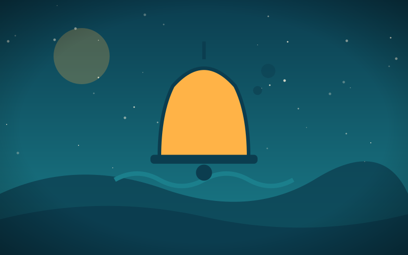

Treasure of the Drowned Bell
Genre: Adventure
Synopsis
Two siblings dive for a legendary bell that rings only when the sea is angry.
Chapter 1: Below the Tide

Everyone in Port Merrow knew the legend: a church bell sunk during a storm, still tolling whenever disaster approached.
Jess and her brother Tom rowed out at low tide with a rope, two lanterns, and more courage than sense.
As they descended, the bell rang once, deep and slow, and the water around them turned cold as winter.